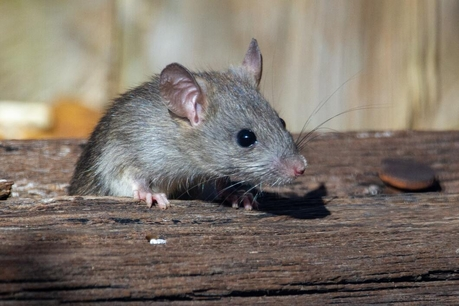
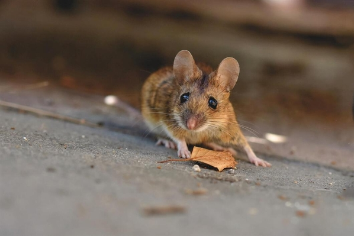
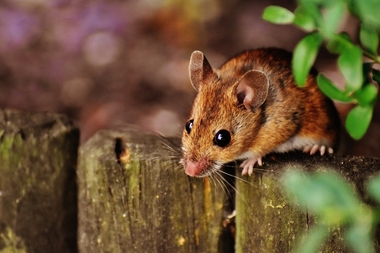
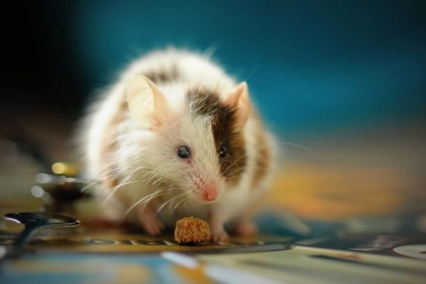

All About Mice
Mouse Facts

Mice are rodents that are known to have a pointed nose, small rounded ears, a body-length scaly tail,
and a high breeding rate. Female mice can give birth when they are only two months old and are able to have 6 to 10 litters per year.

Deer Mice are wild mice that can be found living outside in rural areas. Their fur resembles the fur of a deer which is where they
get their name. They make their homes outdoors in hollow tree logs or piles of garbage. Deer mice are nocturnal, and like to sleep in their nests during the day.
They also use these nests to raise their young and to protect them against harsh weather.

The House Mouse is the most common rodent to be found in many parts of the world. They typically eat 15-20 times a day,
typically they eat plants, but they'll also eat meat and dairy products.

Fancy Mice are the mice most often kept as pets. They are a domesticated version of the house mouse and are considered "pocket pets".
Fancy mice are kept as pets in many countries for a several reasons: they are relatively small, inexpensive, never need bathing, and can learn
to enjoy regular handling if provided with the correct care.